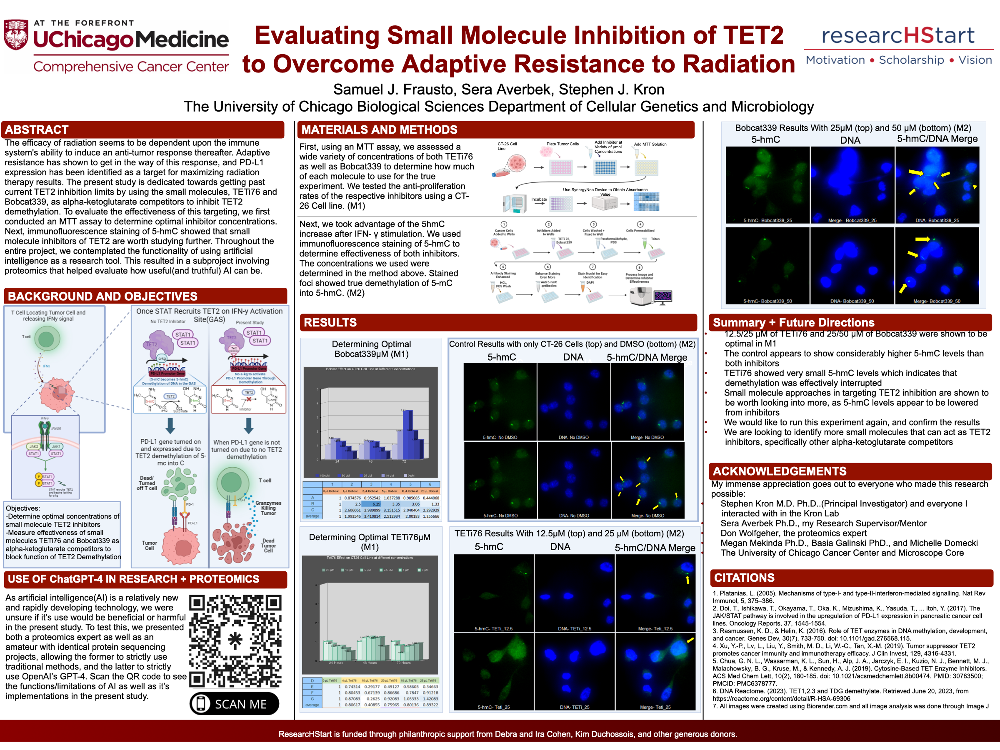

CT-26 cell culture
I maintained the cancer-cell model used to test the research question.
Cancer immunology · Kron Lab
I evaluated small-molecule TET2 inhibition in CT-26 cell cultures as a possible way to address adaptive resistance to radiation therapy.
Role
Independent researcher
Lab
Kron Lab · UChicago
Time
300+ wetlab hours
Recognition
2nd of 36 presenters

I maintained the cancer-cell model used to test the research question.
I evaluated the drug strategy against radiation-resistant cells.
Could inhibiting TET2 help overcome the cells' adaptive response to radiation?
Radiation-resistant cancer cells can adapt to treatment. My project tested whether small-molecule inhibition of TET2 could be a useful strategy for addressing that resistance.
I completed more than 300 hours of wetlab work in the University of Chicago's Kron Lab. I handled the cell-culture work, evaluated the treatment approach, analyzed the study data, and prepared the project for presentation.
I cultured CT-26 cell lines for the radiation-resistance study.
I tested the effects of small-molecule TET2 inhibition on the study model.
I analyzed the experimental data and converted the work into a clear research presentation.
I presented the project at the UIUC cancer research symposium to faculty from universities across Illinois.
Outcome
The project placed second out of 36 presenters at the UIUC symposium and inspired a subsequent grant-winning study by a fellow lab member.
UIUC CANCER RESEARCH SYMPOSIUM · 2ND PLACE